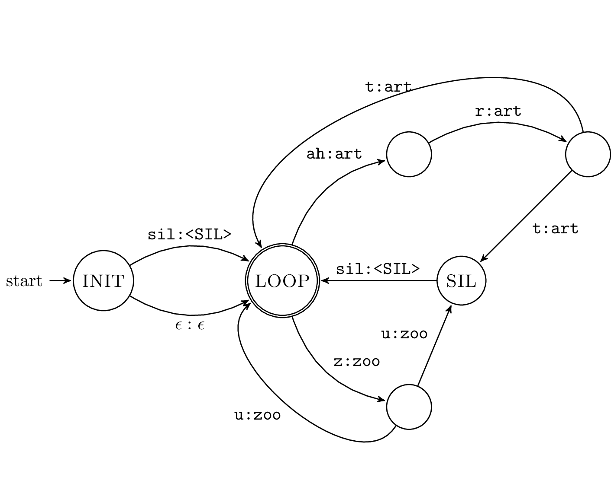
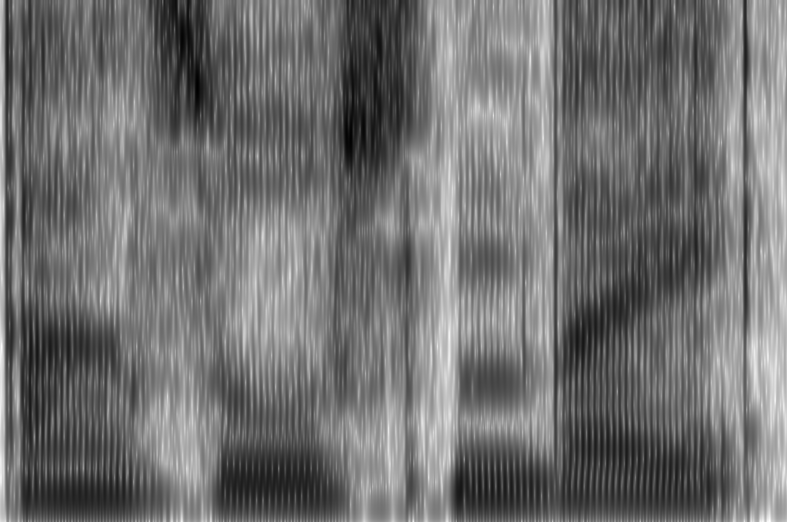
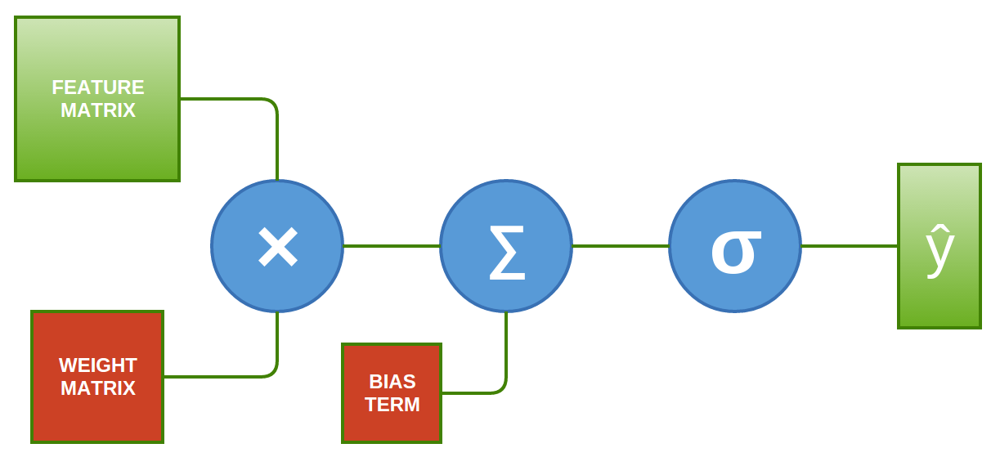

Welcome to my little corner of the internet. I'm Josh. I've been working on AI and language systems since 2011. A few things I've done: co-founded a voice cloning startup, released open-source models with 9M+ monthly downloads, lead applied AI teams, shipped LLM and multimodal SaaS and consumer products, shipped AI hardware, a PhD in automatic speech recognition, and lots of travel. Currently I'm a founding engineer at Veris AI, building simulation sandboxes for LLM agents.




subscribe via RSS